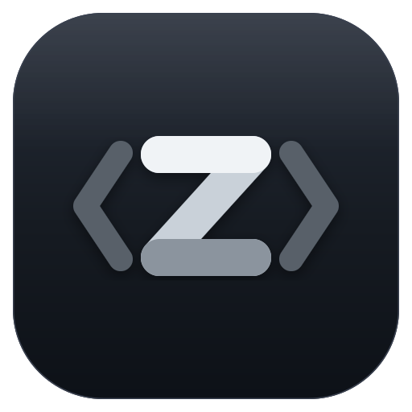

Agent
Resume Codex and Claude Code sessions, open tabbed terminals, and track usage without leaving the project.

CodeZBrowse code, edit files, review git diffs, and run Codex or Claude Code sessions from one fast native window.
$ codez ~/Projects/app
Opened workspace in CodeZ
$ codex resume a81f2c
+ reset.format("%H:%M").to_string() - label.clone() + format_local_reset_time(reset)
1881 fn usage_panel(ui: &mut egui::Ui, usage: &Usage) { 1882 let fs = ui_font_size(ui); 1883 usage_agent_row(ui, "codex", theme::GREEN, l, fs); 1884 } 1931 fn format_reset_time(reset: &ResetTime) -> String { 1932 format_local_reset_time(reset) 1933 }
@@ preview mode switch @@
+ <button data-mode="editor">Editor</button> + <button data-mode="diff">Diff</button> - <span>Editor</span> - <span>Diff</span>
Resume Codex and Claude Code sessions, open tabbed terminals, and track usage without leaving the project.
Navigate the file tree, edit with multi-cursor support, search across files, and jump through the command palette.
Review working-tree changes, inspect commit history, stage paths, write commit messages, and push with system git.
Browse files, jump to what you need, and keep the current folder, file, and changes in view.
Resume Codex or Claude Code sessions beside your code instead of switching between separate windows.
See what changed, stage the right files, write a commit message, and push when it is ready.
CodeZ stays useful as an editor, a diff viewer, an agent workspace, or all three together.
Install the latest signed DMG. CodeZ checks this website for future updates.
macOS 11 or later